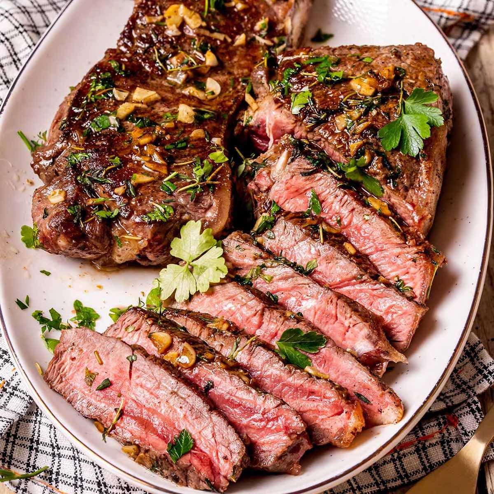

Steak Recipe
Back to Home

A Perfectly Cooked Steak
A steak is a cut of meat, typically from the beef cow, that is grilled or pan-fried to perfection. It's a simple yet satisfying dish that can be seasoned with just salt and pepper or enhanced with a variety of herbs and spices.
Ingredients:
- 2 ribeye steaks
- 2 tbsp olive oil
- 1 tsp salt
- 1/2 tsp black pepper
- 2 cloves garlic, minced
- 1 tbsp butter
Instructions:
- Season the steaks with salt and pepper on both sides.
- Heat the olive oil in a cast iron skillet over high heat until it starts to smoke.
- Cook the steaks for 4-5 minutes on each side for medium-rare doneness, or until they reach your desired level of doneness.
- Add the garlic to the skillet and cook for 30 seconds.
- Reduce the heat to low and add the butter to the skillet.
- Tilt the skillet and baste the steaks with the melted butter for 1 minute.
- Remove the steaks from the skillet and let them rest for 5 minutes before serving.